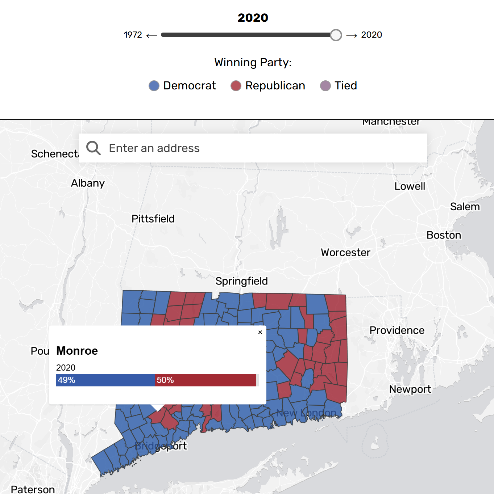
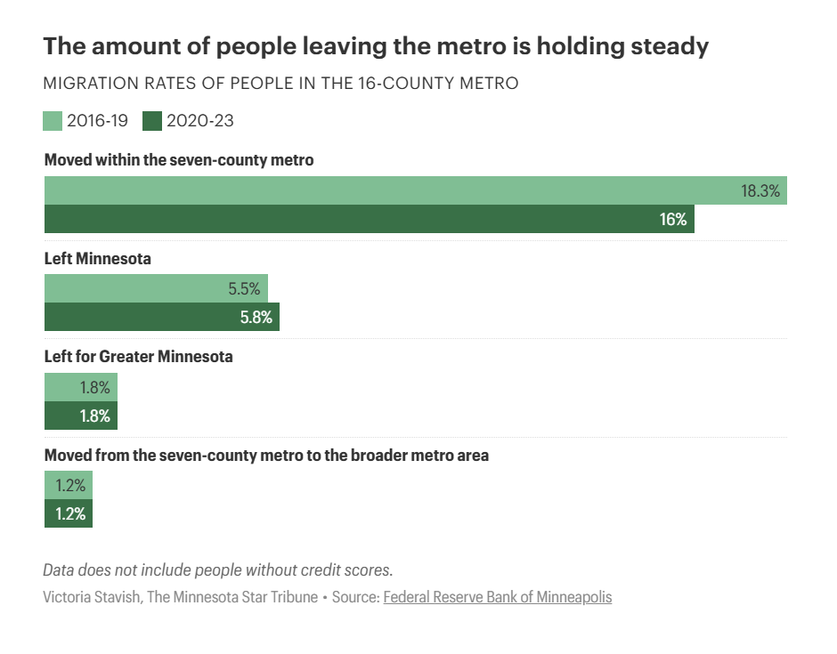
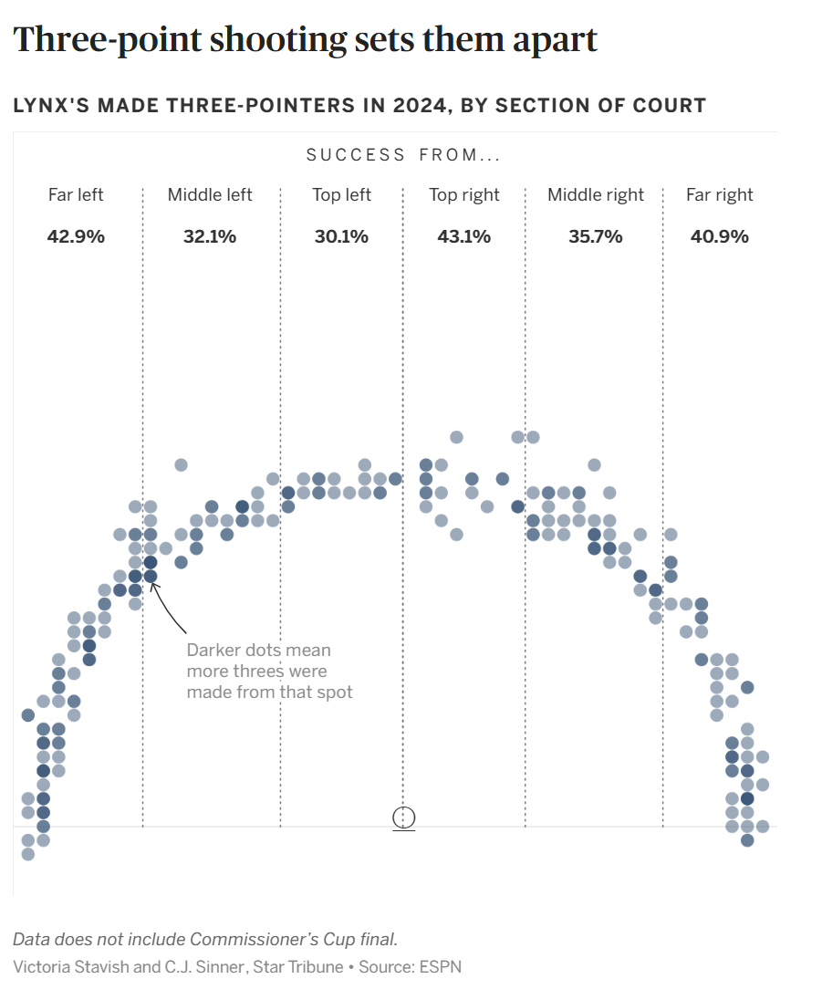
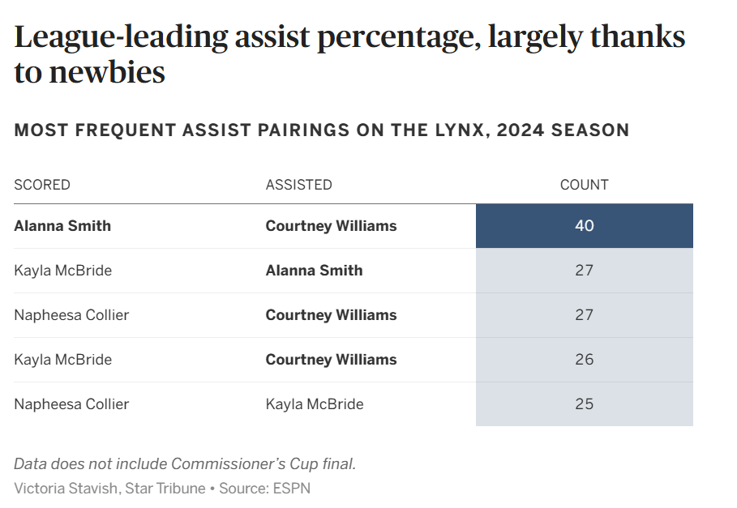
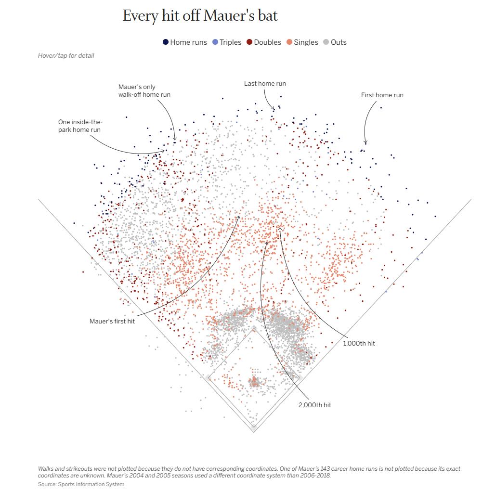
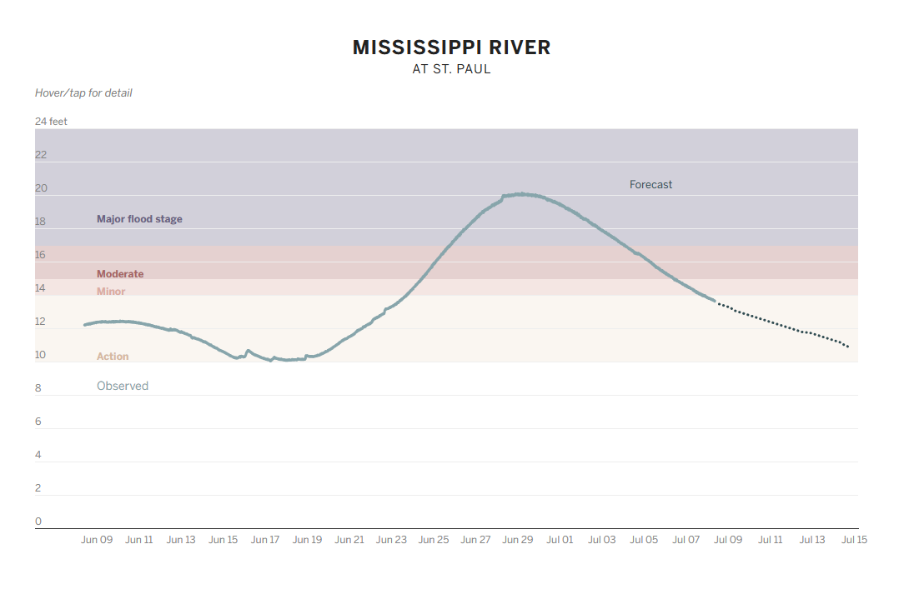

Home
Resume
Data Analysis
Data Visualization
Automation
Contact
Hearst Connecticut Media Group
How CT voting behavior has — and hasn't — changed in 50 years.
|
November 1st, 2024

The Minnesota Star Tribune
New survey debunks myth about migration out of Minneapolis
|
August 23rd, 2024

Lynx could be championship contenders again for the first time since 2017
|
August 15th, 2024


We plotted every hit Joe Mauer collected in his 15-year career
|
July 22nd, 2024

We’re watching these 4 Minnesota rivers for flooding
|
June 24th, 2024
